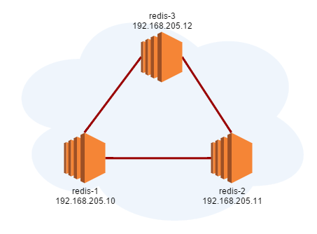
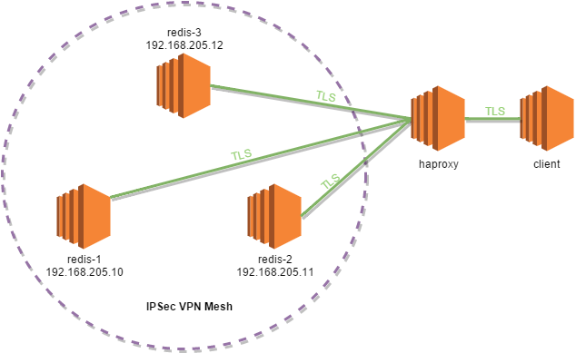

Redis philosophy is that security is a second class citizen and should be implemented by a different layer. A recent post about this topic can be found here. However, some of us have to abide by regulations like PCI DSS or HIPAA that impose strict restrictions on how communications should be done. Our target will be a highly available redis setup with secure communication between nodes and its clients.

For the purpose of securing redis communications in the most transparent way, this setup will use ipsec in transport mode:
Install required packages (debian):
$ apt-get install ipsec-tools racoon
Edit file /etc/ipsec-tools.conf (configure a mesh):
#!/usr/sbin/setkey -f
flush;
spdflush;
spdadd 192.168.205.10/32 192.168.205.11/32 any -P in ipsec
esp/transport//require;
spdadd 192.168.205.11/32 192.168.205.10/32 any -P out ipsec
esp/transport//require;
spdadd 192.168.205.10/32 192.168.205.12/32 any -P in ipsec
esp/transport//require;
spdadd 192.168.205.12/32 192.168.205.10/32 any -P out ipsec
esp/transport//require;
spdadd 192.168.205.11/32 192.168.205.10/32 any -P in ipsec
esp/transport//require;
spdadd 192.168.205.10/32 192.168.205.11/32 any -P out ipsec
esp/transport//require;
spdadd 192.168.205.11/32 192.168.205.12/32 any -P in ipsec
esp/transport//require;
spdadd 192.168.205.12/32 192.168.205.11/32 any -P out ipsec
esp/transport//require;
spdadd 192.168.205.12/32 192.168.205.10/32 any -P in ipsec
esp/transport//require;
spdadd 192.168.205.10/32 192.168.205.12/32 any -P out ipsec
esp/transport//require;
spdadd 192.168.205.12/32 192.168.205.11/32 any -P in ipsec
esp/transport//require;
spdadd 192.168.205.11/32 192.168.205.12/32 any -P out ipsec
esp/transport//require;
Start the service:
service setkey start
Edit the file /etc/racoon/racoon.conf:
log notify;
path pre_shared_key "/etc/racoon/psk.txt";
remote anonymous {
exchange_mode main;
proposal {
encryption_algorithm aes_256;
hash_algorithm sha1;
authentication_method pre_shared_key;
dh_group modp1024;
}
generate_policy off;
lifetime time 12 hour;
}
sainfo anonymous{
pfs_group 2;
encryption_algorithm aes_256;
authentication_algorithm hmac_sha1;
compression_algorithm deflate;
}
Edit the file /etc/racoon/psk.txt:
192.168.205.10 securepassword
192.168.205.11 securepassword
192.168.205.12 securepassword
Start the racoon service:
service racoon restart
If everything is ok we should be able to ping redis-1 from redis-2:
$ ping 192.168.205.10
PING 192.168.205.10 (192.168.205.10) 56(84) bytes of data.
64 bytes from 192.168.205.10: icmp_seq=1 ttl=64 time=0.058 ms
64 bytes from 192.168.205.10: icmp_seq=2 ttl=64 time=0.050 ms
64 bytes from 192.168.205.10: icmp_seq=3 ttl=64 time=0.048 ms
Check with tcpdump that information is being encapsulated:
3:45:50.132031 IP (tos 0x0, ttl 64, id 22902, offset 0, flags [DF], proto ESP (50), length 104)
192.168.205.10 > 192.168.205.11: ESP(spi=0x0957a438,seq=0xaa5), length 84
13:45:50.223091 IP (tos 0x0, ttl 64, id 17277, offset 0, flags [DF], proto ESP (50), length 104)
192.168.205.10 > 192.168.205.11: ESP(spi=0x0957a438,seq=0xaa6), length 84
13:45:50.223268 IP (tos 0x0, ttl 64, id 37527, offset 0, flags [DF], proto ESP (50), length 232)
192.168.205.10 > 192.168.205.11: ESP(spi=0x0957a438,seq=0xaa7), length 212
Benchmark the connection without vpn:
$ iperf -c 192.168.205.10 -t 60
— — — — — — — — — — — — — — — — — — — — — — — — — — — — — —
Client connecting to 192.168.205.10, TCP port 5001
TCP window size: 93.5 KByte (default)
— — — — — — — — — — — — — — — — — — — — — — — — — — — — — —
[ 3 ] local 192.168.205.11 port 33313 connected with 192.168.205.10 port 5001
[ ID ] Interval Transfer Bandwidth
[ 3 ] 0.0–60.0 sec 6.74 GBytes 965 Mbits/sec
Benchmark the connection with vpn:
$ iperf -c 192.168.205.10 -t 60
— — — — — — — — — — — — — — — — — — — — — — — — — — — — — —
Client connecting to 192.168.205.10, TCP port 5001
TCP window size: 85.0 KByte (default)
— — — — — — — — — — — — — — — — — — — — — — — — — — — — — —
[ 3 ] local 192.168.205.11 port 36091 connected with 192.168.205.10 port 5001
[ ID ] Interval Transfer Bandwidth
[ 3 ] 0.0–60.2 sec 357 MBytes 49.7 Mbits/sec
Well that’s disappointing. I believe the culprit is related to the lack of support for the AES-NI instructions or with MTU:
AVX2 or AES-NI instructions are not detected.
eth0: <BROADCAST,MULTICAST,UP,LOWER_UP> mtu 1500 qdisc pfifo_fast state UP mode DEFAULT group default qlen 1000
Let’s move on for now.
Redis’s configuration is quite simple, we can ignore underlying network configuration.
Install redis-server:
apt-get install redis-server
Edit redis-1 /etc/redis/redis.conf:
bind 127.0.0.1 192.168.205.10
requirepass password
port 6379
Edit redis-2 /etc/redis/redis.conf:
bind 127.0.0.1 192.168.205.11
port 6379
slaveof 192.168.205.10 6379
masterauth password
requirepass password
Edit redis-3 /etc/redis/redis.conf:
bind 127.0.0.1 192.168.205.12
port 6379
slaveof 192.168.205.10 6379
masterauth password
requirepass password
Start redis-server
service redis-server start
Check wether everything is working:
redis-1:
$ redis-cli
127.0.0.1:6379> auth password
OK
127.0.0.1:6379> info replication
# Replication
role:master
connected_slaves:2
slave0:ip=192.168.205.12,port=6379,state=online,offset=105163101,lag=0
slave1:ip=192.168.205.11,port=6379,state=online,offset=105163242,lag=0
master_repl_offset:105163242
repl_backlog_active:1
repl_backlog_size:1048576
repl_backlog_first_byte_offset:104114667
repl_backlog_histlen:1048576
redis-2 and redis-3:
$ redis-cli
127.0.0.1:6379> auth password
OK
127.0.0.1:6379> info replication
# Replication
role:slave
master_host:192.168.205.10
master_port:6379
master_link_status:up
master_last_io_seconds_ago:1
master_sync_in_progress:0
slave_repl_offset:105161550
slave_priority:100
slave_read_only:1
connected_slaves:0
master_repl_offset:0
repl_backlog_active:0
repl_backlog_size:1048576
repl_backlog_first_byte_offset:0
repl_backlog_histlen:0
Redis Sentinel provides high availability for redis and will promote a slave to master if needed, among other tasks.
On each node edit /etc/redis/sentinel.conf:
sentinel monitor master 192.168.205.10 6379 2
sentinel auth-pass master password
sentinel down-after-milliseconds master 5000
sentinel failover-timeout master 5000
daemonize yes
Start redis-sentinel service
service redis-sentinel start
Validate:
$ redis-cli -h 192.168.205.10 -p 26379 info
…
# Sentinel
sentinel_masters:1
sentinel_tilt:0
sentinel_running_scripts:0
sentinel_scripts_queue_length:0
master0:name=master,status=ok,address=192.168.205.10:6379,slaves=2,sentinels=3
$ redis-cli -h 192.168.205.10 -p 26379 sentinel sentinels master
1) 1) “name”
2) “192.168.205.12:26379”
2) 1) “name”
2) “192.168.205.11:26379”
$ redis-cli -h 192.168.205.10 -p 26379 sentinel slaves master
1) 1) “name”
2) “192.168.205.11:6379”
2) 1) “name”
2) “192.168.205.12:6379”
Now we have achieved a highly available redis setup with secure communication between nodes.
One possible configuration is adding the clients to the vpn. However the major downside would be reloading the vpn every time a new client is added or removed. For the sake of completeness, client access will be over tls using stunnel. Stunnel will be listening on port 6380 and redirecting to 127.0.0.1:6379
Install stunnel:
apt-get install stunnel
Edit the file /etc/stunnel/stunnel.conf:
redis-1:
key = /etc/ssl/private/ssl-cert-snakeoil.key
cert = /etc/ssl/certs/ssl-cert-snakeoil.pem
sslVersion = TLSv1.2
options = NO_SSLv2
options = NO_SSLv3
socket = l:TCP_NODELAY=1
socket = r:TCP_NODELAY=1
[redis]
accept = 192.168.205.10:6380
connect = 127.0.0.1:6379
redis-2:
key = /etc/ssl/private/ssl-cert-snakeoil.key
cert = /etc/ssl/certs/ssl-cert-snakeoil.pem
sslVersion = TLSv1.2
options = NO_SSLv2
options = NO_SSLv3
socket = l:TCP_NODELAY=1
socket = r:TCP_NODELAY=1
[redis]
accept = 192.168.205.11:6380
connect = 127.0.0.1:6379
redis-3:
key = /etc/ssl/private/ssl-cert-snakeoil.key
cert = /etc/ssl/certs/ssl-cert-snakeoil.pem
sslVersion = TLSv1.2
options = NO_SSLv2
options = NO_SSLv3
socket = l:TCP_NODELAY=1
socket = r:TCP_NODELAY=1
[redis]
accept = 192.168.205.12:6380
connect = 127.0.0.1:6379
Start stunnel (stunnel4 on debian) service:
service stunnel4 start
Check if we can connect:
$ openssl s_client -connect 192.168.205.10:6380
CONNECTED(00000003)
Obtaining the address of the current master:
$ redis-cli -h 192.168.205.10 -p 26379 SENTINEL get-master-addr-by-name master
1) “192.168.205.10”
2) “6379”
Redis sentinel knows nothing about stunnel and the reported master is running on port 6379, when we were expecting the 6380 (stunnel port).
Since we can not use redis-sentinel to discover the active master, haproxy will do that job for us.
Haproxy 1.5 or greater is needed.
Edit file /etc/haproxy/haproxy.conf:
defaults REDIS
mode tcp
timeout connect 3s
timeout server 6s
timeout client 6s
frontend ft_redis
bind *:6379 ssl crt /etc/haproxy/certificate.pem ciphers ECDHE-RSA-AES128-GCM-SHA256:ECDHE-ECDSA-AES128-GCM-SHA256:ECDHE-RSA-AES256-GCM-SHA384:ECDHE-ECDSA-AES256-GCM-SHA384:DHE-RSA-AES128-GCM-SHA256:DHE-DSS-AES128-GCM-SHA256:kEDH+AESGCM:ECDHE-RSA-AES128-SHA256:ECDHE-ECDSA-AES128-SHA256:ECDHE-RSA-AES128-SHA:ECDHE-ECDSA-AES128-SHA:ECDHE-RSA-AES256-SHA384:ECDHE-ECDSA-AES256-SHA384:ECDHE-RSA-AES256-SHA:ECDHE-ECDSA-AES256-SHA:DHE-RSA-AES128-SHA256:DHE-RSA-AES128-SHA:DHE-DSS-AES128-SHA256:DHE-RSA-AES256-SHA256:DHE-DSS-AES256-SHA:DHE-RSA-AES256-SHA:!aNULL:!eNULL:!EXPORT:!DES:!RC4:!3DES:!MD5:!PSK
default_backend bk_redis
backend bk_redis
option tcp-check
tcp-check connect
tcp-check send AUTH\ password\r\n
tcp-check expect string +OK
tcp-check send PING\r\n
tcp-check expect string +PONG
tcp-check send info\ replication\r\n
tcp-check expect string role:master
tcp-check send QUIT\r\n
tcp-check expect string +OK
server redis1 192.168.205.10:6380 check-ssl inter 1s ssl verify none
server redis2 192.168.205.11:6380 check-ssl inter 1s ssl verify none
server redis3 192.168.205.12:6380 check-ssl inter 1s ssl verify none
Client will need support for secure communications in the redis client or you will need to use stunnel.
Edit the file /etc/stunnel/stunnel.conf
sslVersion = TLSv1.2
options = NO_SSLv2
options = NO_SSLv3
socket = l:TCP_NODELAY=1
socket = r:TCP_NODELAY=1
[redis]
client = yes
accept = 127.0.0.1:6379
connect = <haproxy ip>:6379
And finally access the redis server:
$ redis-cli -h 127.0.0.1
127.0.0.1:6379> auth password
OK
127.0.0.1:6379> info replication
# Replication
role:master
connected_slaves:2
slave0:ip=192.168.205.11,port=6379,state=online,offset=575891,lag=1
slave1:ip=192.168.205.12,port=6379,state=online,offset=575891,lag=0
master_repl_offset:575891
repl_backlog_active:1
repl_backlog_size:1048576
repl_backlog_first_byte_offset:2
repl_backlog_histlen:575890

Although the process described above is functional, it is still non trivial. If in the near future TLS support is included in redis, this might make matters easy.